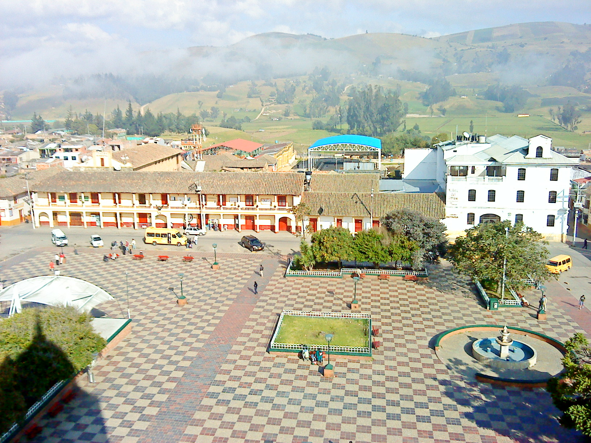

Periodo Prehistórico
El periodo prehistórico de Chocontá, en el departamento de Cundinamarca, está marcado por la presencia de comunidades indígenas que habitaron la región antes de la llegada de los colonizadores españoles en el siglo XVI. Este territorio formó parte del dominio de los Muiscas, un grupo indígena conocido por su organización social, agrícola y política.
Era Colonial
La era colonial en Chocontá fue un periodo de cambios profundos y significativos, marcado por la conquista, la explotación de los indígenas, la evangelización y el mestizaje cultural. Las consecuencias de esta era se sienten hasta el día de hoy, formando parte integral de la identidad y la historia de la región.
Era Moderna
Época Contemporánea
La época contemporánea en Chocontá ha sido testigo de la modernización de la agricultura, el crecimiento del turismo y mejoras en infraestructura, lo que ha llevado a un progreso económico y social importante. Sin embargo, el municipio aún enfrenta desafíos en cuanto al desarrollo sostenible y la retención de su población joven. El futuro de Chocontá dependerá de su capacidad para adaptarse a estos cambios, promoviendo un equilibrio entre el progreso y la conservación de sus recursos naturales y su identidad cultural. .